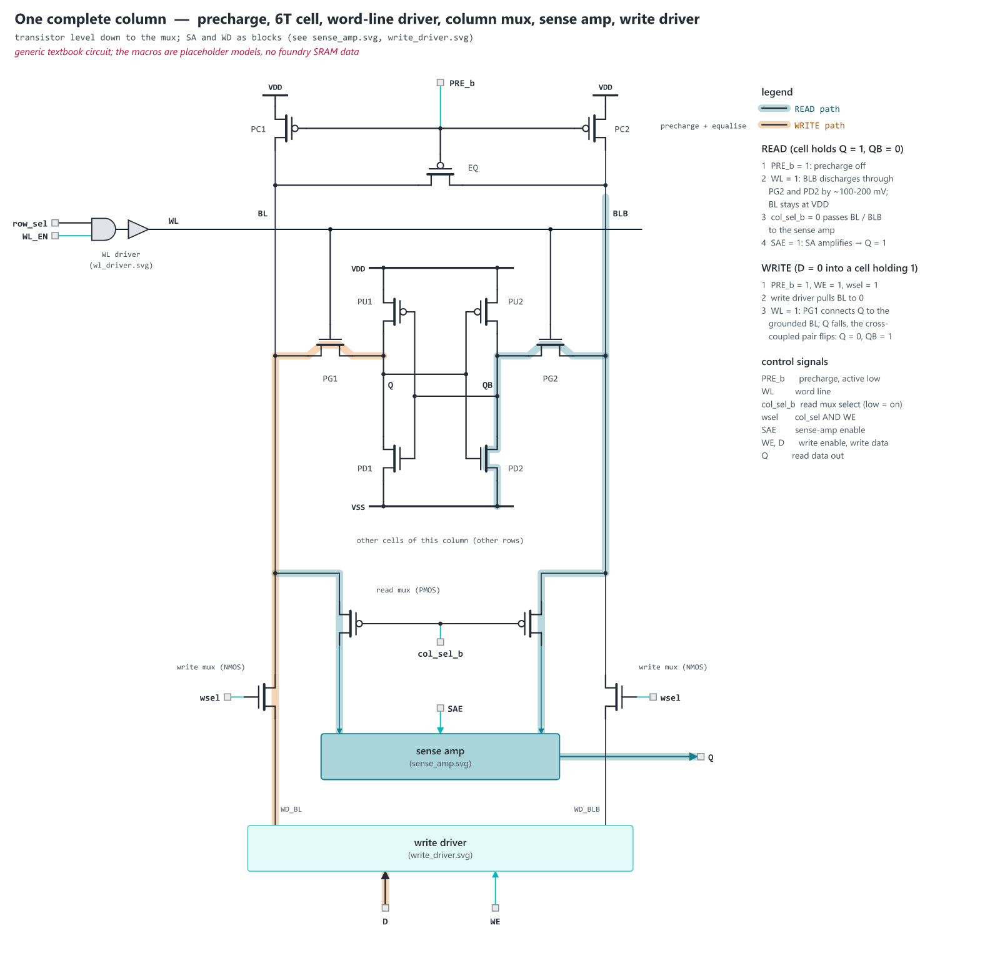
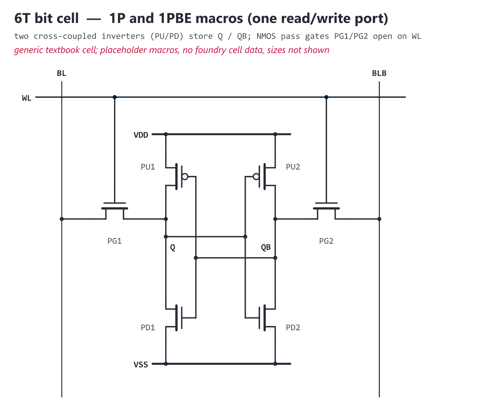
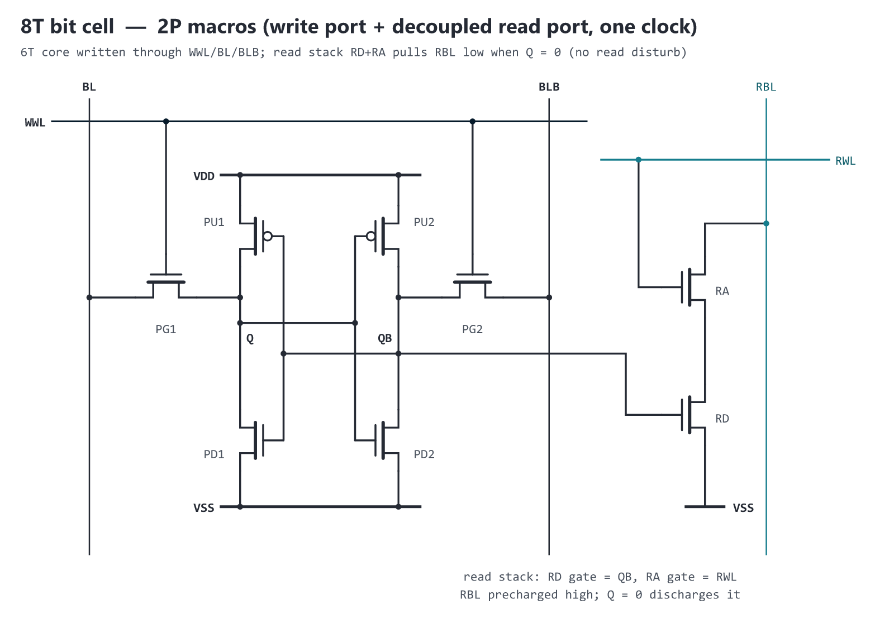
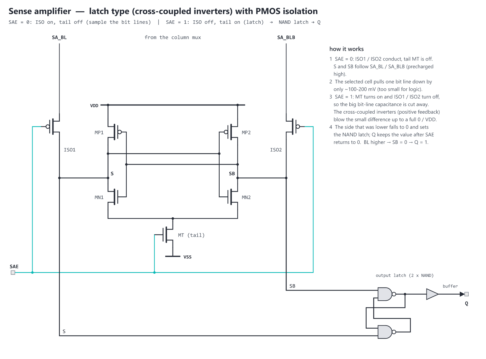
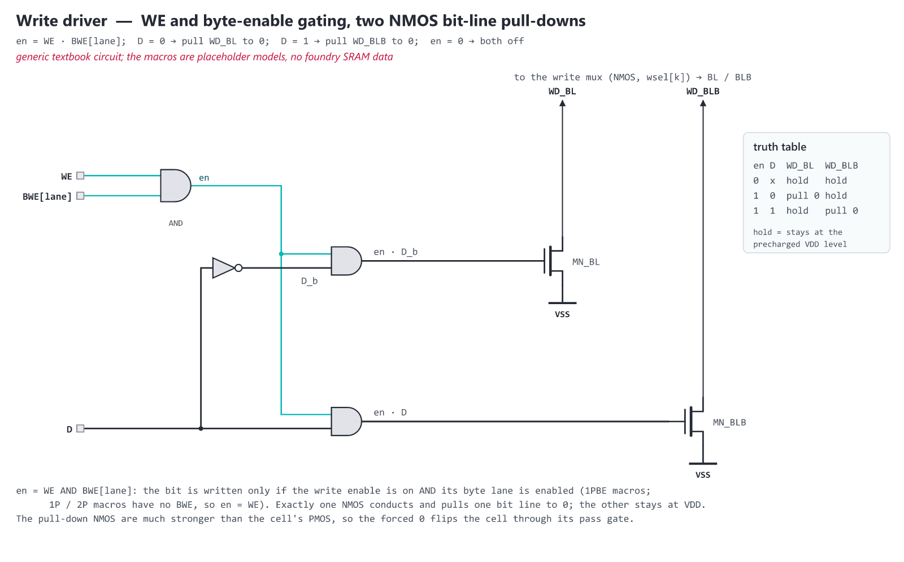
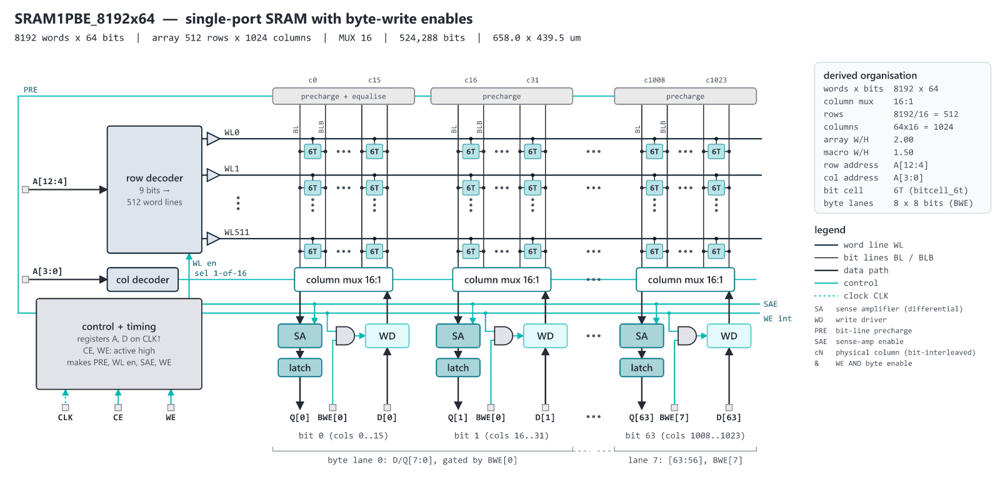
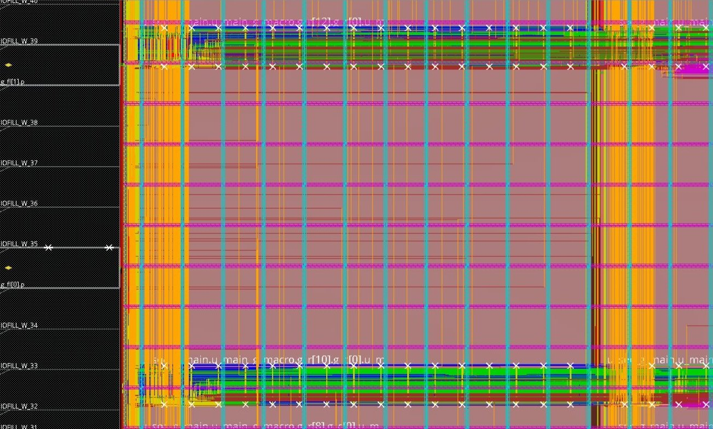

Memory design
SRAM macro models for every chip, plus a transistor-level SRAM column simulated in Spectre.
Screenshot proofs
The circuit drawings are generic textbook circuits drawn for learning; the chips use the SRAM macros described above.








Overview
Large memories on a chip are SRAM macros: blocks of bit cells with their own address decoder, sense amplifiers and write drivers. The generic GPDK045 PDK has no memory compiler, so I developed my own SRAM macros: an exact behaviour model for simulation, estimated timing and power libraries for synthesis and timing, and an outline with pins for place and route. They are used in all five designs and pass DRC and LVS with them.
To understand what is inside such a macro, I also drew the read and write circuits at transistor level (6T and 8T bit cells, precharge, column mux, sense amplifier, write driver, word-line driver) and simulated one complete column with GPDK045 transistors in Spectre.
Finally, a flip-flop-versus-macro study measured when a memory should be built from flip-flops and when it must be a macro.
Headline numbers
Architecture
| Block | What it does |
|---|---|
| 1-port macros (1P) | one read or write per clock; 6T bit cell |
| 1-port with byte enables (1PBE) | the CPU and main SRAMs: write single bytes of a word |
| 2-port macros (2P) | one read port and one write port at the same time; 8T bit cell |
| 2-port, 2-clock (2P2C) | for clock-domain crossing FIFOs (cost study only) |
| Tiling | big memories are tiled from one macro size: the 4 MB main SRAM = 64 tiles of 8192 × 64 with a registered bank select |
Key specifications
| Parameter | Value |
|---|---|
| Macro types modelled | 13 (8 listed below are used in the chips or the reference core; the rest are test / cost-study sizes) |
| Area model | bits x bit cell / 0.55 + periphery; bit cell 0.30 µm² (1P, 6T) or 0.45 µm² (2P, 8T); periphery 2,500 µm² (1P) or 3,500 µm² (2P) |
| Timing model | clock-to-output (slow corner 0.9 V, 125 C) = 0.60 + 0.12 x log2(bits / 1024) ns; setup 0.20 ns; hold 0.05 ns; fast corner = 0.55 x slow |
| Energy model | read energy 0.10 + 0.030 x width + 0.0010 x sqrt(bits) pJ; leakage 20 pW per bit at 125 C |
| 4 MB main SRAM (synthesised wrapper) | 3,432 cells, 18.51 mm², +7.28 ns slack |
Every SRAM macro used
| Macro | Ports | Words x bits | Size (um) | Area µm² (est.) | Clock-to-Q slow (est.) | Used for | Chips |
|---|---|---|---|---|---|---|---|
| SRAM1PBE_8192×64 | 1 port + byte enables | 8,192 × 64 | 658.0 × 439.5 | 289,171 | 1.68 ns | V3 4 MB main SRAM (64 tiles) | V3 x64 |
| SRAM1PBE_8192×32 | 1 port + byte enables | 8,192 × 32 | 467.2 × 312.9 | 146,201 | 1.56 ns | RISC-V controller 128 KB SRAM (4 tiles) | MCU x4, V3 x4 |
| SRAM1PBE_2048×24 | 1 port + byte enables | 2,048 × 24 | 209.8 × 140.2 | 29,418 | 1.27 ns | shared requant table of the 3 engines | V2 x1, V3 x1 |
| SRAM2P_4608×8 | 1 read + 1 write port | 4,608 × 8 | 224.8 × 150.5 | 33,828 | 1.22 ns | input window of Engine A and of Engine B | V2 x2, V3 x2 |
| SRAM2P_6400×8 | 1 read + 1 write port | 6,400 × 8 | 261.0 × 174.4 | 45,524 | 1.28 ns | pooling line buffer | V1 x1, V2 x1, V3 x1 |
| SRAM1P_2048×8 | 1 port | 2,048 × 8 | 131.0 × 88.9 | 11,649 | 1.08 ns | AUX engine gate codes | V2 x1, V3 x1 |
| SRAM1P_768×13 | 1 port | 768 × 13 | 109.2 × 73.5 | 8,029 | 0.99 ns | Engine A tap index table | V2 x1, V3 x1 |
| SRAM2P_294912×4 | 1 read + 1 write port | 294,912 × 4 | 1205.6 × 803.7 | 968,941 | 1.82 ns | original accelerator weight tile (1.18 Mbit); replaced by weight streaming in V2 / V3 | reference core only |
Memory on each chip (macros only, estimated area)
| Chip | Macros | Bits | Macro area |
|---|---|---|---|
| RISC-V controller | 4 | 1,048,576 bits (128.0 KB) | 0.58 mm² |
| V1 | 1 | 51,200 bits (6.2 KB) | 0.05 mm² |
| V2 | 6 | 200,448 bits (24.5 KB) | 0.16 mm² |
| V3 | 74 | 34,803,456 bits (4,248.5 KB) | 19.25 mm² |
Design flow
All steps use Cadence tools on a university server; HLS and firmware builds ran on a PC.
- Macro models: my own generator writes the behaviour model, timing / power library (slow and fast corners) and the outline with pins.
- Use in the chips: wrappers select macro or flip-flop builds; Genus, Innovus, Tempus and Voltus read the models.
- Circuit study: bit cells and read / write circuits drawn at transistor level; one column simulated in Spectre with GPDK045 transistors.
Results and measurements
| Check | Result |
|---|---|
| Flip-flop memory cost | about 9.5-10 µm² per bit (flop + write mux + share of the read mux) |
| Macro cost | about 0.55 µm² per bit + 2,500-3,500 µm² fixed periphery |
| Break-even size | about 260 bits (1-port) / 380 bits (2-port): below that, flip-flops win |
| 4 KB as flip-flops | synthesis did not finish in about 2 hours: about 16x the macro area (estimate) |
| Spectre: write | the cell flips 22.5 ps (to 0) and 32.1 ps (to 1) after the word line rises |
| Spectre: read | bit lines differ by 284.5 mV (read 0) / 283.8 mV (read 1) after 450 ps of word line; the sense amp resolves in 37.2 / 39.8 ps; Q = 0.0 V / 1.0 V: both values read back correctly |
| Spectre set-up | GPDK045 typical transistor models, VDD 1.0 V, 60 fF per bit line (a 256-cell column) |
Problems solved
Choosing what goes on chip. The original accelerator kept a 1.18 Mbit weight tile on chip (0.97 mm²). Analysing the access pattern showed the weights are read sequentially, so V2 / V3 re-stream them from SDRAM with a prefetching DMA and drop the macro entirely.
Small FIFOs stay flip-flops. At 576-4,096 bits a macro is only 1.4-4.7x smaller, costs a hard block to place, and a flop FIFO gives dual-clock behaviour for free, so the small FIFOs were kept as flip-flops.
Area follows memory. V3 is about 6.5x the area of V2 almost only because of its 4 MB SRAM: memory size is the first decision in a chip plan.